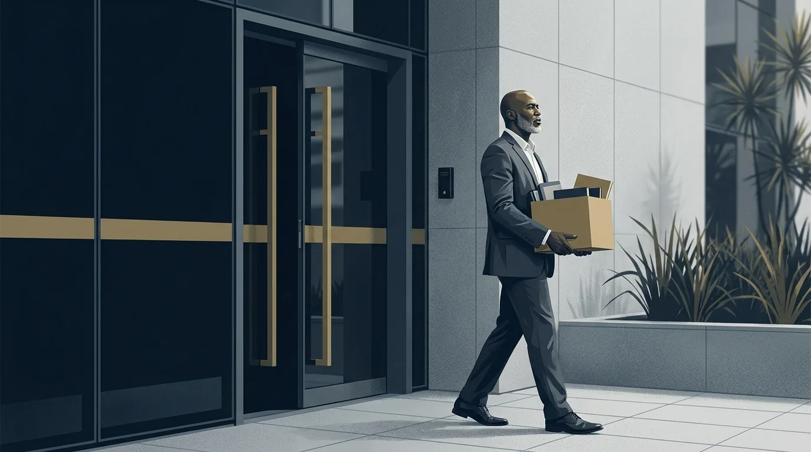

Rescisão Indireta: a Justa Causa Aplicada contra a Empresa

O salário atrasa todo mês, o FGTS (Fundo de Garantia do Tempo de Serviço) não aparece no extrato e as cobranças vêm em tom de humilhação, na frente dos colegas. Muitos trabalhadores de Florianópolis vivem essa rotina acreditando que só existem duas saídas: aguentar calado ou pedir demissão e abrir mão de quase tudo. Só que a CLT (Consolidação das Leis do Trabalho), a lei que rege os empregos com carteira assinada, prevê uma terceira via, a rescisão indireta, pensada exatamente para esse tipo de situação.
A rescisão indireta é a justa causa aplicada ao contrário. Em vez de a empresa dispensar o empregado por falta grave, é o empregado quem encerra o contrato porque a empresa cometeu uma falta grave (um descumprimento sério das suas obrigações, listado na própria lei). Quando a Justiça do Trabalho reconhece o pedido, o trabalhador recebe as mesmas verbas de quem foi dispensado sem justa causa.
Nas próximas seções, explicamos o que diz o art. 483 da CLT, quais situações configuram falta grave do empregador e como o processo corre na prática. Os riscos também entram na conversa, sem rodeios, porque a rescisão indireta exige estratégia, provas e orientação adequada.
O que é rescisão indireta e por que ela existe
O contrato de trabalho cria obrigações para os dois lados. O empregado precisa cumprir horário, executar as tarefas combinadas e agir com lealdade. A empresa, por sua vez, precisa pagar o salário em dia, depositar o FGTS, respeitar a função contratada e garantir um ambiente digno.
Quando o empregado quebra gravemente as suas obrigações, a empresa aplica a justa causa do art. 482 da CLT. Ele sai sem aviso prévio, sem multa do FGTS e sem seguro-desemprego. A lei, contudo, não protege apenas o empregador. O art. 483 da CLT faz o caminho inverso: lista as faltas graves da empresa e autoriza o empregado a considerar o contrato rescindido por culpa dela.
Por isso a rescisão indireta é chamada de justa causa do empregador, ou justa causa ao contrário. O trabalhador toma a iniciativa de sair, mas quem deu causa ao fim do contrato foi a empresa. Como consequência, ele recebe como se tivesse sido dispensado sem justa causa, com todas as verbas rescisórias completas (os valores que a empresa deve pagar quando o contrato termina).
Na prática, a diferença de valores é grande. Quem pede demissão perde o aviso prévio indenizado, a multa de 40% do FGTS (valor extra que a empresa paga ao trabalhador, calculado sobre tudo o que depositou no fundo durante o contrato), o saque do fundo e o seguro-desemprego. Quem obtém a rescisão indireta preserva cada um desses direitos. Para conhecer o conjunto completo de garantias previstas na legislação, veja também o nosso guia sobre os principais direitos do trabalhador brasileiro.
Em Florianópolis, os casos chegam de todos os setores. No comércio e na hotelaria, o atraso de salário se intensifica fora da temporada de verão. No polo de tecnologia da capital, aparecem com frequência o desvio de função (quando o empregado é colocado para fazer tarefa diferente da que foi contratada) e as metas transformadas em instrumento de pressão abusiva. Em qualquer desses cenários, vale examinar se há fundamento para a rescisão indireta antes de tomar qualquer decisão.
Atenção: pedir demissão no impulso é o erro mais caro que um trabalhador nessa situação pode cometer, porque a decisão é praticamente irreversível. Uma vez assinado o pedido de demissão, convencer a Justiça a revertê-lo depois é muito difícil. Antes de assinar qualquer papel, procure orientação.
As faltas graves do art. 483 da CLT traduzidas para o dia a dia
O texto legal usa expressões antigas, como "ato lesivo da honra e boa fama". A tabela abaixo traduz cada alínea, que é como a lei chama cada item da lista, para situações que qualquer pessoa reconhece. O texto completo está na CLT, no site do Planalto.
| Alínea do art. 483 da CLT | O que diz a lei | Como aparece no dia a dia |
|---|---|---|
| a | Exigência de serviços superiores às forças, proibidos por lei, contrários aos bons costumes ou alheios ao contrato | Auxiliar administrativo obrigado a carregar peso todos os dias; vendedor escalado para limpeza pesada |
| b | Tratamento com rigor excessivo | Chefe que persegue um único funcionário com punições e cobranças desproporcionais |
| c | Perigo manifesto de mal considerável | Trabalho de risco sem equipamento de proteção individual |
| d | Descumprimento das obrigações do contrato | Salário atrasado de forma reiterada, FGTS sem depósito, plano de saúde cortado sem aviso |
| e | Ato lesivo da honra e boa fama do empregado ou de sua família | Ofensas, acusações falsas, assédio moral e assédio sexual |
| f | Ofensa física (salvo legítima defesa) | Agressão praticada pelo empregador ou por superior hierárquico |
| g | Redução do trabalho por peça ou tarefa, afetando o sustento | Comissionista que tem a carteira de clientes esvaziada e a renda derrubada |
Salário atrasado e FGTS sem depósito
O atraso reiterado de salário é a causa mais comum de rescisão indireta na Justiça do Trabalho. Um atraso isolado de poucos dias dificilmente basta. O padrão que se repete mês após mês, por outro lado, compromete o sustento da família e configura falta grave do empregador.
O FGTS segue a mesma lógica. A Lei 8.036/1990 obriga a empresa a depositar todo mês 8% do salário na conta do FGTS aberta na Caixa em nome do empregado. Muitos trabalhadores só descobrem os depósitos em falta quando tentam usar o fundo para financiar a casa própria. A ausência reiterada de depósitos é reconhecida com frequência como fundamento para a rescisão indireta.
Assédio moral, assédio sexual e rigor excessivo
Humilhações diante dos colegas, apelidos ofensivos, ameaças constantes de demissão e cobranças vexatórias de metas configuram assédio moral. O assédio sexual, por sua vez, envolve investidas e insinuações de natureza sexual não consentidas. As duas condutas ferem a honra do empregado e se enquadram no art. 483 da CLT. Nesses casos, além da rescisão indireta, pode caber indenização, como explicamos no artigo sobre dano moral no trabalho.
Desvio de função e serviço acima das forças
Ninguém é obrigado a executar tarefas estranhas ao contrato ou acima da sua capacidade física. O recepcionista transformado em estoquista e a atendente que vira faxineira vivem desvio de função; o técnico obrigado a dobrar jornada sem pagamento é um caso típico de exigência acima do combinado. Igualmente grave é a redução do trabalho por peça ou tarefa, que atinge quem ganha por produção ou comissão, como vendedores que recebem por venda fechada: quando a empresa corta o volume de trabalho e derruba a renda, a lei também autoriza a saída motivada.
Como funciona o pedido de rescisão indireta na prática
A rescisão indireta não acontece automaticamente. O trabalhador não pode simplesmente declarar a falta da empresa e ir embora com as verbas. É preciso ajuizar uma ação, ou seja, entrar com um processo na Justiça do Trabalho, pedindo que o juiz reconheça a falta grave do empregador e declare o fim do contrato por culpa da empresa.
Em Florianópolis, essas ações tramitam nas varas do trabalho da capital, que integram o TRT-12 (Tribunal Regional do Trabalho da 12ª Região), sediado justamente na cidade. Os recursos contra a sentença são julgados pelo próprio tribunal. Na prática, o trabalhador da Grande Florianópolis tem toda a estrutura da Justiça do Trabalho a poucos quilômetros de casa.
Uma dúvida frequente é se a pessoa precisa sair do emprego antes de processar. A resposta depende do fundamento. Nos casos de descumprimento das obrigações do contrato e de redução do trabalho por peça, a própria CLT permite que o empregado permaneça no serviço enquanto o processo corre. Já nas situações de agressão, assédio ou risco à saúde, a permanência costuma ser insustentável, e o afastamento imediato se justifica. Essa escolha é estratégica e deve ser feita com orientação profissional.
As provas decidem o processo
Nenhum pedido de rescisão indireta se sustenta sem prova. O juiz não presume a falta grave: ele precisa vê-la demonstrada. Por isso, antes de qualquer atitude, reúna e preserve todo o material disponível:
- Holerites e extratos bancários que mostrem os atrasos de salário;
- Extrato da conta do FGTS, obtido no aplicativo oficial ou na Caixa, apontando os meses sem depósito;
- Mensagens de WhatsApp e e-mails com cobranças abusivas, ofensas ou ordens de desvio de função;
- Nomes de colegas que presenciaram os fatos e possam depor como testemunhas;
- Registros de ponto, escalas e comprovantes de jornada.
Cuidado: não apague conversas nem devolva documentos antes de copiá-los. A prova que parece boba hoje pode ser decisiva na audiência. Guarde tudo em local seguro, fora do celular corporativo.
Se você se reconheceu em alguma dessas situações, uma análise profissional pode indicar se o seu caso sustenta um pedido de rescisão indireta. A equipe da Mussi Advocacia & Consultoria, em Florianópolis, avalia a documentação e explica o cenário real antes de qualquer decisão.
O que você recebe se ganhar e o que arrisca se perder
Reconhecida a rescisão indireta, o trabalhador recebe exatamente o que receberia numa dispensa sem justa causa. As verbas rescisórias vêm completas. A comparação com o pedido de demissão deixa clara a diferença:
| Verba | Rescisão indireta reconhecida | Pedido de demissão |
|---|---|---|
| Saldo de salário | Sim | Sim |
| Aviso prévio indenizado | Sim | Não, e pode ser descontado |
| 13º salário proporcional | Sim | Sim |
| Férias vencidas e proporcionais com 1/3 | Sim | Sim |
| Multa de 40% sobre o FGTS | Sim | Não |
| Saque do saldo do FGTS | Sim | Não |
| Seguro-desemprego | Sim | Não |
Uma nota sobre o aviso prévio indenizado: é o salário do período de aviso pago sem que o empregado precise trabalhá-lo. Quem pede demissão, além de não receber, pode ter esse valor descontado do acerto se não cumprir o aviso.
Além dessas parcelas, a ação costuma incluir também a cobrança do que ficou para trás durante o contrato: diferenças salariais, horas extras não pagas e os próprios depósitos de FGTS em atraso. Em situações de assédio, o pedido de indenização por dano moral se soma às verbas rescisórias.
Há, porém, um risco que precisa ficar claro desde o início. Se o juiz entender que a falta grave do empregador não ficou provada, o pedido não é simplesmente arquivado. Quando o trabalhador já deixou o emprego, a saída é convertida em pedido de demissão comum. Ele fica sem aviso prévio indenizado, sem multa de 40%, sem saque do FGTS e sem seguro-desemprego.
Esse desfecho não é raro em ações mal preparadas, movidas no calor da revolta e sem provas organizadas. É justamente por isso que a avaliação prévia do caso importa tanto. Um profissional experiente consegue estimar a força das provas antes do ajuizamento e, quando o cenário é frágil, orientar caminhos menos arriscados.
Resumo do risco: ganhar significa receber tudo o que a dispensa sem justa causa garante. Perder, depois de já ter saído do emprego, significa ficar com saldo de salário, 13º proporcional e férias (vencidas e proporcionais) com 1/3, e o aviso prévio não trabalhado ainda pode ser descontado do acerto. A diferença entre os dois cenários costuma ser de muitos salários.
Quando procurar um advogado trabalhista em Florianópolis
O momento certo de buscar orientação é antes de qualquer atitude, e não depois. Enquanto o vínculo está ativo, ainda dá para preservar provas, planejar a saída e escolher o melhor fundamento. Depois de um pedido de demissão assinado, reverter a situação se torna muito mais difícil.
Um advogado trabalhista em Florianópolis conhece a rotina das varas do trabalho da capital e o entendimento predominante no TRT-12. Esse conhecimento local ajuda a calibrar a estratégia: quais provas pesam mais, como as audiências costumam correr e quais pedidos fazem sentido em cada caso. Situações especiais, como a da gestante com estabilidade no emprego, exigem cuidado redobrado antes de qualquer rompimento do contrato.
Prazos: a prescrição de 2 anos
A prescrição é o prazo máximo que a lei dá para exigir um direito na Justiça. Na esfera trabalhista, o trabalhador tem até 2 anos, contados do fim do contrato, para ajuizar a ação. Dentro dela, só podem ser cobrados os direitos dos últimos 5 anos. Quem deixa o tempo passar perde o que teria a receber, por mais grave que tenha sido a conduta da empresa.
Erros comuns que enfraquecem o pedido
Alguns comportamentos repetidos derrubam pedidos que tinham tudo para prosperar:
- Deixar de comparecer ao trabalho sem orientação, o que pode ser interpretado como abandono de emprego ou pedido de demissão;
- Pedir demissão por escrito e só depois procurar informação sobre a rescisão indireta;
- Apagar conversas, perder holerites e não baixar o extrato do FGTS a tempo;
- Deixar a situação se arrastar por anos, tolerando as faltas sem registrar nada;
- Assinar acordos ou recibos sem entender de quais valores está abrindo mão (o que é assinado como quitado depois não pode mais ser cobrado).
Se o seu salário atrasa, o FGTS não cai ou o ambiente de trabalho se tornou insuportável, não decida sozinho. A Mussi Advocacia & Consultoria, do advogado José Lucas Mussi, atende trabalhadores de Florianópolis e região e pode analisar se a rescisão indireta é o caminho adequado para o seu caso.
Perguntas frequentes sobre rescisão indireta
Posso pedir rescisão indireta se o FGTS está sem depósito?
Sim. A falta de depósito do FGTS é descumprimento de obrigação do contrato, previsto na alínea d do art. 483 da CLT. A Justiça do Trabalho costuma reconhecer a rescisão indireta nesses casos, principalmente quando a irregularidade se repete por vários meses. Guarde o extrato da conta do FGTS como prova.
Preciso sair do emprego para entrar com o pedido?
Não necessariamente. Nos casos de descumprimento das obrigações do contrato e de redução do trabalho por peça, a própria lei permite permanecer trabalhando enquanto o processo corre. Nas situações mais graves, como assédio ou agressão, o afastamento imediato costuma ser a saída mais segura. Defina a estratégia com um advogado antes de decidir.
O que acontece se eu perder o pedido de rescisão indireta?
Se o juiz não reconhecer a falta grave da empresa e você já tiver deixado o emprego, o pedido é convertido em pedido de demissão. Nesse caso, você recebe saldo de salário, 13º proporcional e férias (vencidas e proporcionais) com 1/3, sem multa de 40%, sem saque do FGTS e sem seguro-desemprego, e o aviso prévio não trabalhado pode ser descontado do acerto. Por isso a análise prévia das provas é tão importante.
Quanto tempo demora um processo de rescisão indireta em Florianópolis?
Não existe prazo fixo. Nas varas do trabalho de Florianópolis, um processo costuma levar de alguns meses a mais de um ano até a sentença, conforme a complexidade e os recursos no TRT-12. Boa parte dos casos termina em acordo já na audiência inicial, o que encurta bastante o caminho.
Atraso de salário de poucos dias configura falta grave?
Um atraso isolado de poucos dias dificilmente sustenta a rescisão indireta. O que a Justiça do Trabalho considera falta grave é o atraso reiterado, mês após mês, ou o não pagamento por período prolongado. Registre cada atraso com holerites e extratos bancários para demonstrar o padrão.
A rescisão indireta foi criada justamente para que o trabalhador não precise escolher entre a dignidade e as verbas rescisórias. Se a sua situação em Florianópolis se parece com alguma das descritas aqui, converse com a equipe da Mussi Advocacia & Consultoria e entenda, com calma e sem compromisso, qual é o melhor caminho para o seu contrato.